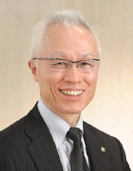
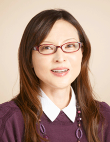
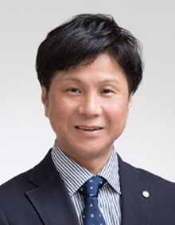
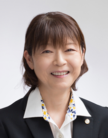

5つの専門家集団が
企業のあらゆる課題を
ワンストップで解決。
FIVE SPECIALIST GROUPS
5つの専門家集団が企業のあらゆる課題をワンストップで解決。
INFORMATION & NEWSLETTER
OUR SERVICES
事業を始めよう！と思った時から実際に開業するまでは、事前に検討・準備しなければならないことが沢山あります。この事前の検討・準備をしっかりと行うことにより安心して開業できるのです。
また、個人事業を営んでおられる方が、その事業を法人にしたい（法人成り）とお考えの場合も事前の検討・準備が必要となります。このような時、私どもでは安心して開業・会社設立が行えるようにきめ細かいサポートをさせていただきます。
会計帳簿の作成には、商業簿記や工業簿記の知識が必要になります。自分で記帳することが困難である場合は記帳を代行いたします。
インターネットでデータのやり取りができるクラウド会計ソフトの導入相談から初期設定及び入力業務まで丁寧にアドバイスいたします。パソコンの初心者、経理未経験の方でも安心して始められます。
請求書や領収書等の会計資料が正しく整理され、日々の取引の記録が適正にされているかを確認いたします。また、不備な点があれば、助言をさせていただき改善します。自社での記帳（自計化）をサポートいたします。
税理法人すずかぜは、経営力向上のためのセミナーを無料で開催しています。参加希望の方はぜひご連絡ください。セミナーのご案内を送付させていただきます。
資金繰表とは、通常は3ヶ月先までの収入と支出を予測して表にしたものですが、これを作成しておけば、例えば機械や車両を購入する時期あるいは資金不足となる場合の資金の額などを事前に把握でき、突然の資金不足などの事態を未然に防ぐことができます。
「勘定合って銭足らず」と言いますが、資金ショートという最悪の事態を起こさないためにも資金繰計画表は事業経営にあたって不可欠といえます。
銀行などから設備資金や運転資金等の借入れを行うとき保証人や担保の提供を求められます。新規事業のための借入の際には事業計画書や損益計画書が必要であったり、借入金の返済資金が不足するようになった時などは経営改善計画書の提出を求められたりします。
融資等資金調達支援業務では、事業計画書、損益計画書あるいは経営改善計画書、中小企業の会計指針チェックリスト等の作成及び支援を行います。また、希望により金融機関の紹介もいたします。
損益計算書で算出された利益又は損失はキャッシュの増減額と必ずしも一致しません、キャッシュフロー計算書はキャッシュベースで算出した利益又は損失を表示し、「勘定あって銭足らず」にならないよう管理することができます。
変動損益計算書によって、従業員の賃金賞与などの適正額や賃金賞与額から見た限界利益の必要額が簡単に計算できますので、労働分配率・労働生産性の管理に役立ちます。また、損益の分岐点となる売上高が容易に分かるので、売上目標、予算など設定しやすくなり損益計画と損益管理に役立ちます。
法人税、所得税、消費税、相続税、贈与税等の申告書の作成及び申告を代理します。
リスクマネジメントは、例えば取引先の倒産による売掛金の回収不能、売上激減、火災等による営業休止、社長の長期入院や死亡等の場合の事業承継、当座の運転資金借入返済など諸々のリスクを想定することで、経営者はリスクを具体的に認識できるため、トータル的にバランスよく対策を考える機会となります。また、リスク発生後における対策を、後継者等にあらかじめ具体的に指示しておくことができます。
調査を受ける法人や個人は正しい申告をしても不安感などの精神的負担及び時間的制約がかかってしまいます。調査期間は2日間ぐらいが多いのですが、企業規模によっては1週間ぐらいになることもあるため、調査を受ける立場にある人の精神的負担が特に重いものがあります。そのため、税理士がそばにいるのといないのとでは精神的負担の程度にも差がありますし、また、税務署等の調査が常に適正とは限りません。そこで税理士が第三者的立場で立会いをすることで、税務調査が納税者側と税務署側双方で納得しやすいものとなります。もちろん税務署等の指摘事項に対し納税者側が納得できなければ、税理士が代理人として不服申立等をすることもできます。
会社が廃業して消滅するためには、債権の回収、債務の支払い、資産の処分、株主に対する残余財産の分配、清算結了登記手続きなどが必要となります。これらの清算事務期間中に利益が生じたり、残余財産の中に留保した利益部分がある場合は法人税や株主に対する配当が発生し、所得税が課税されます。そのため私たちは、清算手続きに関してトータル的サポート並びに手続き代理を行っております。
給与賞与計算代行
年末調整事務代行
償却資産税申告代行
不動産登記簿には、土地建物の所在、地番（家屋番号）地積、床面積等の表示と所有権、担保権などに関する記載があります。例えば土地や建物を購入する場合、登記簿を閲覧すれば所有者が誰であるか、担保権などがついていないかを確認することができるので安心です。よく問題となるのが、土地を売ろうと思ったが、登記簿上売り手の名義になっていなかった場合です。何十年も前に亡くなった祖父の名義のままであったり、亡父が買った土地が亡父の名義になっていなかったりなどで、売り手の名義にするまでに長い時間と多くの費用がかかることがあります。
また、不動産を譲渡したり、購入したりする場合は常に税金の問題が発生します。税金を最小限にする方法、払わなくてよい方法、あるいは税額控除を受ける方法などを適用できる場合があります。税理士に相談してから決断されることをお勧めします。
商業登記簿には、商号（法人名）本店（会社の住所）目的（事業の内容）資本金、役員の氏名、住所、発行株式数などの記載があります。例えば、株式会社は登記してはじめて法人として成立します。従って「株式会社甲商事です。」と名乗る会社と初めて取引を行う場合はまず、その会社が登記されているかどうか、資本金はいくらか、取締役は誰かなどを登記簿で調べることで一応の安心感はあります。
商業登記制度は「商業登記簿」という国が備えた帳簿に「商人」という商取引の主体に関する記載内容を公示することで、商取引の安全と円滑に寄与するとともに、併せて商人自身の信用保持に役立てることを主たる目的とする制度です。登記の効力としては、登記すべき事項について登記がなされたときは善意の第三者に対してもその事実を主張することができます。
信託とは「信じて托すること」です。
例えば、自分の死後において配偶者あるいは障害を持つ子に生涯にわたって安定した生活をさせたいとき、信頼できる甥や姪などと信託契約をして自分の財産を甥や姪などに管理運用させ、配偶者や障害を持つ子の生活の支援を行うことができる制度です。また、自分が認知症などになったときに備えて、生前に財産を甥などに信託して自分の生活を支援してもらうこともできます。
遺言は自分の死後の財産を承継する者を文書をもって決める行為ですが、公正証書や自筆証書などによるものがあります。
自筆証書による場合は、法律で定められた形式が整っていない場合は無効となりますので注意が必要です。
（1）後継者不在問題の解決
親族後継者がいないという理由だけで廃業されている企業が多くあります。従業員のこと、お客様のことなどを考えると本当にそれでよいのでしょうか。会社は自分だけのものでしょうか。後継者は親族でなければならないのでしょうか。M&Aは企業の存続発展を目的としています。
（2）成長戦略としての活用
M&Aのコンセプトは「もっとしあわせな明日を」です。当然のことながら「企業の発展」は最重要課題です。成長戦略なくしてM&Aはありません。誰もが魅力を感じる企業にすることが経営者としての責任です。
（3）経営の合理化策としての活用
持株会社スキームを用いて従来どおりそれぞれの社長のもとで地元に密着した営業や商品戦略をとると同時に、一括借入れ、共同物流、間接部門の一体化などによる大幅なコストダウンと競争力を手に入れることが可能となります。
（1）株式譲渡
全株式の取得によるM&Aは、その会社を丸ごと承継することになります。手続が簡便であるため我が国では最も多く利用されています。
（2）事業譲渡
譲渡会社が営む事業の一部について顧客、商品サービス、その他の資産を引き継ぎ、経営効率を最大限に高めるとともに想定外のリスクを回避する目的で利用されます。
（3）合併
被合併会社を丸ごと承継し、被合併会社は消滅します。従って簿外負債など想定外のリスクを負わされることもあるため専門家のサポートが必要になります。
（4）株式移転
2社以上で持株会社をつくり一括借入れや共同物流、間接部門の統合などにより規模の拡大を図り、競争力を向上させる目的で行われます。
（5）会社分割
譲渡会社の一部を切り離して他の会社へ併合するイメージです。将来性のある事業に経営資源を集中するために他の事業を譲渡する目的で行われます。譲渡企業にとっては、必要な技術や人材、顧客等を時間をかけないで獲得することができます。
譲渡希望企業と引継希望企業間を株式会社コンパスが仲介いたします。明るい未来のためのM&Aは、経験豊富なすずかぜマネジメントグループにおまかせください。
建設業の許可申請を行う場合は工事経歴書、経営業務の管理責任者証明書、専任技術者証明書など多くの法定書類を提出しなければならず、その記載内容も複雑であるため通常は多大な時間と労力を要します。
行政書士に申請代理を依頼すれば、それなりの費用負担はありますが、相談しながら事前に準備と対策ができるため、効率よく申請手続きを進めることができます。
公共工事の発注機関は競争入札に参加しようとする建設業者について資格審査を行うこととされており、その審査項目は客観的事項と主観的事項に分けられその審査結果を点数化した上で建設業者をランク付けしています。このうち、客観的事項の審査が「経営事項審査（経審）」といわれる制度です。
経営事項審査の項目のうち、経営状況分析や経営規模に関わる項目は実際の企業経営の過程で点数アップに関する対策をとることができます。そのためには、会計期間が終了した後ではなく、日頃から税理士、行政書士をうまく活用することがランクの維持や向上に効果的です。
当事務所における農地に関する許可申請代理では、購入した農地を宅地に転用する目的で行う売買が最も多くを占めます。農地の取引に関する許可要件は農地を耕作の目的で取引する場合、耕作以外の目的で取引する場合、宅地等に転用する場合によってそれぞれ農地法に規定されています。
また、例えば農地の売買には許可申請、登記申請、税務申告などの手続きが絡んできます。従ってそれぞれの専門家である行政書士、司法書士、税理士に、あらかじめ相談し、アドバイスを受けることで手続きをスムーズに進めることができます。
認定経営革新等支援機関とは、中小企業に対して専門性の高い支援を行うために国が認定した支援機関のことです。
認定経営革新等支援機関は、税務、金融、企業財務などの専門分野における適切な資格や経験を有していることが必要であるため、税理士、公認会計士、金融機関などが認定資格を有します。
認定経営革新等支援機関は、中小企業の経営課題の抽出や分析、事業改善計画の策定や実行、資金調達のサポートなど、様々な支援事業を行います。
経営者の方々は、事業に関する様々なアイデアを持っています。そのアイデアの実現は一人ではできません。従業員や金融機関などの理解と協力が必要です。その理解と協力を得るためのツールが事業計画書なのです。
金融支援を必要とする場合は、金融機関に対して、事業者の経営状況や改善意欲を示すことで、信用力や信頼性を高める効果があります。
認定経営革新等支援機関を利用すると、中小企業は自社の潜在力や底力を引き出し、経営の強化につなげる可能性が広がります。また、国の補助事業や税制優遇などの施策を利用する際にも、認定経営革新等支援機関の関与が条件となる場合があります。
相続税の申告から遺産分割協議書の作成、登記までワンストップで行います。
すずかぜグループでは税理士、司法書士、行政書士がそれぞれの専門領域で、お客様の状況に応じたアドバイスをさせていただいておりますので、セカンドオピニオンとしてお気軽にご利用ください。
相続財産の把握：相続税は相続財産の評価額が、次の基礎控除額を超える場合に申告が必要になります。
基礎控除額＝3,000万円 ＋（600万円×法定相続人の数）
料金に関する注記：
1. 相続人で、要申告者が3名を超える場合、1名につき10万円加算
2. 物納等にかかる報酬は別途計算する
3. 遺産の所在が遠方にあるなど、手数を要する場合は、3割以内で加算する
4. 納税猶予等の特例を適用する場合は、猶予税額の10%を加算する
5. 遺産総額は小規模宅地特例適用前とし、借地権・耕作権等の控除前の金額となります
CLIENT VOICES
変わらない信念と共に、変わり続ける企業として。
10年来のつきあいです。
全幅の信頼を置いています。
アドバイスをきいて有限会社にしました。
年2回の“すずかぜセミナー”はほぼ皆勤賞です。
明るく丁寧な対応に満足しています。
末永くおつき合いしたいです。
すずかぜ経友会に参加しています。
納得できる「税理士選び」からスタートしました。
100年続く企業のために。
腹を割って話ができます。
GREETING

一般的に弁護士や会計士、税理士、司法書士等は専門職とよばれます。専門職が落ち入りがちになるのは、専門性を極めようとするあまりクライアントが真に求めていることからかけ離れてしまう傾向にあるようです。
ピーター・ドラッカーは、その著書の中で「本当のプロが極めるべきは顧客ニーズの対応である」と言っています。また「企業は全ての顧客の代理人である。顧客の利益のために働くのである」とも言っています。まさに私たち専門職は、お客様の利益のために働く代理人としての責任を全うしなければなりません。
すずかぜマネジメントグループは二つの考え方を基盤として、お客様の「もっと幸せな明日」に貢献していく所存であります。
OUR TEAM
一般的に弁護士や会計士、税理士、司法書士等は専門職とよばれます。専門職が落ち入りがちになるのは、専門性を極めようとするあまりクライアントが真に求めていることからかけ離れてしまう傾向にあるようです。

経営企画・M&A・事業承継・組織再編などの対策をお客様に提案し、「企業の存続と発展」を目指して活動しています。
中小企業経営者の一番身近な相談相手として、最適なサポートができるよう努力したいと思います。

令和4年2月1日、すずかぜマネジメントグループの一員として新たに、司法書士法人すずかぜが誕生いたしました。国民に身近なくらしの法律家として、地域の皆様が親しみやすく、何でも安心して相談できる司法書士法人となれますよう日々邁進してまいります。
お困りの際には、お気軽にお声がけください。地域と皆様を元気にして行けるよう頑張って参ります。今後ともよろしくお願いいたします。

2013年 税理士法人すずかぜ入社／2024年 税理士登録（合格科目：法人税、相続税、消費税、簿記論、財務諸表論）
お客様が親しみやすく、相談しやすい税理士を目指しております。信頼できる経営パートナーとして、申告の代理人としてお客様のお役に立てるよう精進してまいります。
OFFICE INFORMATION
ACCESS
FREQUENTLY ASKED QUESTIONS
贈与者が異なるので、暦年課税と相続時精算課税は併用できます。
令和6年1月1日以降の贈与は、相続時精算課税制度に基礎控除が創設されたため、父からの贈与は「暦年贈与課税の基礎控除110万円」を、母からの贈与は「相続時精算課税の基礎控除110万円」を適用できます。
それぞれ異なる課税方式を選択しているため、贈与合計額220万円は贈与税の課税対象から控除されるので、贈与税はかかりません。
※贈与税の申告書の提出はありませんが、相続時精算課税を選択する場合は令和7年2月1日～3月17日までに「相続時精算課税選択届出書」の提出が必要です。
※相続時精算課税を選択した場合、その後、同じ贈与者からの贈与について暦年課税へ変更することはできません。
（令和6年12月20日時点の法令等に基づいて記載しております）
債務超過の会社が役員借入金を返済できない場合、社長が債権を放棄することは可能です。ただし、正式な手続きを踏む必要があります。社長と会社の間で債権放棄に関する書面を作成し、放棄の内容、金額、日付などを明記します。その後、会社は債務免除益を計上する必要があり、繰越欠損金があれば法人税が課税されない場合もあります。
得意先、仕入先その他事業に関係のある者などに対するものは、交際費に該当します。
事業に関係のない相手の場合で、宣伝効果を目的として協賛金を支払う場合は宣伝広告費になります。この場合、不特定多数の人に向けて宣伝効果があることが前提となります。
宣伝効果もなく、事業に関係のない相手の場合は、寄付金となります。寄付金は、一定の範囲内での損金算入となります。
協賛金の目的によって判断する必要があります。いずれにしても帳簿にしっかり内容を記載し、証憑書類を保存しておきましょう。
ゴルフにかかる費用で、経費として認められるかどうかは、その費用が「会社の業務に関係しているかどうか」がポイントになります。経費にできるのは、得意先や業者とのゴルフのプレー代、ゴルフコンペの景品代、法人がゴルフ場の入会金等を支払、資産として計上している場合の年会費、ゴルフ場への往復交通費、取引先との飲食代、コンペ開催時の景品代などです。 一方、経費にできないものは、従業員同士でのプレー費用や練習費用、ゴルフ用品の購入費用、ゴルフ保険の 費用などです。ただし、従業員だけで行ったゴルフプレーやコンペは福利厚生費として計上できる場合もあります。
インボイス制度の適格請求発行事業者の登録を取消すには、以下の手続きが必要です。
届出書の提出：「適格請求書発行事業者の登録の取消しを求める旨の届出書」を作成し、所轄の税務署長に提出します。
提出期限：登録の取消しを希望する課税期間開始日の15日前までに提出します。
これにより、次の課税期間（提出した日の属する課税期間の翌課税期間）から登録が取り消されます。
参考文献：国税庁ホームページ（https://www.nta.go.jp/taxes/shiraberu/zeimokubetsu/shohi/keigenzeiritsu/pdf/0023007-071.pdf）
自動的にお孫さんの預金にはなりません。贈与が成立するためには、贈与をする人ともらう人の両方がその事実を理解し、同意することが大切です。
贈与が成立していない場合、その財産は名義預金と見なされ、亡くなった方の相続財産として扱われます。つまりお孫さんの預金にはならず、遺産分割の対象になります。
もし亡くなった後に財産を渡したい場合は、遺言書を作成してお孫さんを受贈者として指定する特定遺贈の方法があります。これにより、法定相続人以外の方にも遺産を渡すことができ、遺産分割の詳細を被相続人の意思に沿って決めることができます。ただし、特定遺贈を受けたお孫さんには相続税が2割加算される点には注意が必要です。
生前に贈与が可能であれば、教育資金や結婚・子育て資金、住宅取得資金などの贈与税の非課税制度を利用することも一つの選択肢です。
ふるさと納税は自身の選んだ自治体に寄附を行うことで、所得税や住民税の控除を受けられる仕組みです。控除を受けられる上限は納税額によっても異なりますが、寄附額から2,000円を引いた金額になります。例えば35,000円のふるさと納税を行った場合は寄附額から2,000円を引いた33,000円が所得税や翌年の住民税から控除されます。
※ふるさと納税のメリット
返礼品を受け取れる：寄附のお礼として、その地域の特産品や商品を受け取ることができます。例えば、地元の農産物、海産物、工芸品、旅行券など、地域ごとに魅力的な返礼品が提供されており、実質的な自己負担額2,000円で多くの品物が手に入ります。
2. 地域貢献ができる：自分が応援したい地域に寄附をすることで、地方自治体の財政支援や地域活性化に貢献できます。災害に見舞われた地域など、特定の支援が必要な場所を直接サポートできます。
3. 自治体を自由に選べる：日本全国の自治体が対象となるため、どの自治体に寄附をするか自由に選べます。地元以外にも、旅行先や興味のある地域、特定の政策や活動に力を入れている自治体を選べる点が大きな魅力です。
ワンストップ特例制度の利用が簡単：確定申告を必要とせず寄附の手続きが完了する「ワンストップ特例制度」を利用すれば、5つの自治体まで寄附しても簡単に控除を受けることができます。これにより、忙しい人でも手軽にふるさと納税を活用できるメリットがあります。
購入の方が今期に多く減価償却費を計上できます。
購入した車両の法定償却方法は定率法が適用され、リース資産の場合はリース期間定額法が適用されます。
例）300万円の普通車両、法定耐用年数6年、リース期間5年
今期の減価償却費は購入の場合999,000円、リースの場合600,000円となり購入した方が減価償却費が多く計上されます。(期中取得の場合は月数按分が必要です)
この保険契約は「名義保険」と判断され、相続開始時点の解約返戻金相当額で相続財産となる可能性があります。書類上は被相続人の氏名が出てこないため、相続税には関係ないと思われがちですが、保険料負担者が被相続人である場合は注意が必要です。
特別償却とは普通償却の他に償却費の上乗せを認める制度です。
特別償却は課税を以後の事業年度に繰り越せるので、購入初年度は特別償却を選択した方が税負担を軽減できます。
税額控除は免税ですので、償却期間が終了するまでを通して考えると税額控除の方が税負担を軽減できます。
どちらを選択するか判断するためのポイントは、償却期間の合計の法人税額をトータルで減少させたい時は免税である税額控除を選択、資金繰りの関係で、とにかくその期の法人税額を軽減したい時は特別償却を選択すると有利です。
中小企業などが新品の機械及び装置等を取得し、事業の用に供した場合には、特別償却又は税額控除の特例を受けることができます。
一般的に利用されているのは次の方法があります。
◎中小企業退職金共済を利用
～中退共制度の特色～
☆ 掛金の一部を国が助成します。
☆ パートタイマーの方も加入できます。
☆ 掛金は税法上、全額非課税になります。
☆ 過去の勤務期間通算や企業間を転職した場合に通算ができます。
☆ 掛金は預金口座から振替えます。退職金は直接退職者に支払いますので、管理が簡単です。
加入申込書はお近くの金融機関又は委託事業団体の窓口にあります。
◎中小企業退職金共済を利用
～中退共制度の特色～
☆ この制度は、従業員の退職金を損金あるいは必要経費として計画的に準備できます。
☆ 特定退職金共済は、商工会議所が「特定退職金共済団体」として国の認可を得て実施しています。
☆ 掛金は、月額１，０００円から３０，０００円まで１，０００円刻みで選べます。
☆ 掛金は全額損金又は必要経費として認められます。
お近くの商工会議所にお問い合わせ下さい。
初回相談は無料です。税務・相続・登記・M&A・経営改善、
5つの専門家集団がワンストップでサポートいたします。